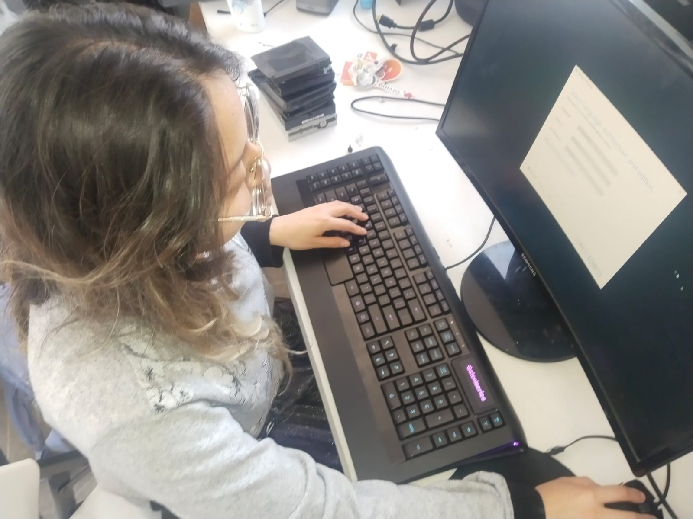

Soy una persona interesada en el desarrollo front-end, con gusto por el diseño web y la creación de interfaces claras y funcionales. Estudié psicología, lo que me permite tener una visión innovadora en este ámbito. Además, tengo particular interés en la aplicación de la tecnología y el desarrollo web en la investigación básica y aplicada, tanto en la psicología como en las otras áreas.
Actualmente me encuentro colaborando en el Centro de Investigación e Innovación en Tecnologías de la Información y Comunicación (INFOTEC).
Datos personales:
Contacto:
